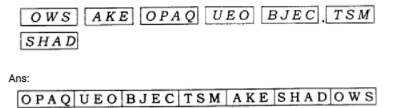

all ex and ques/ans is avlable in wedsite of ncert
1. Rearrange the boxes given below to make a sentence that helps us understand opaque objects.
ANS:

2. Classify the objects or materials given below as opaque, transparent or translucent and luminous or non-luminous:
ANS: Air, water, a piece of rock, a sheet of aluminium, a mirror, a wooden board, a sheet of polythene, a CD, smoke, a sheet of plane glass, fog, a piece of red hot iron, an umbrella, a lighted fluorescent tube, a wall, a sheet of carbon paper, the fame of a gas burner, a sheet of cardboard, a lighted torch, a sheet of cellophane, a wire mesh, kerosene stove, sun, firefly, moon.
3. Can you think of creating a shape that would give a circular shadow if held in one way and a rectangular shadow if held in another way?
Ans: Yes, there are many things which give a circular shadow if held in one way and a rectangular shadow if held in another way. For example:a cylinder, a circular disc etc.
4. In a completely dark room, if you hold up a mirror in front of you, will you see a reflection of yourself in the mirror?
Ans: No, in a completely dark room no image will be formed because there is no light in the room so no reflection of light takes place and no image will be formed.